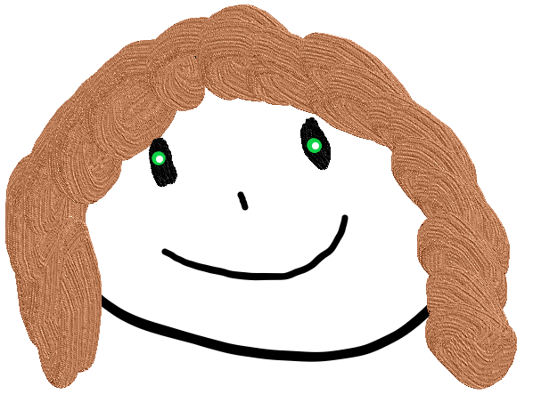

Mi propio CV

Curriculum Vitae
Priscila Moro
Mi Descripción Personal
Me gusta aprender cosas nuevas. Me gusta trabajar y lograr objetivos en equipo
Mi Educación
Nivel secundario completo
Nivel B2 de inglés
Experiencias Laborales
no hay aún :(
Skills y Hobbies
Manejo del inglés en B2 y manejo del italiano en un nivel básico
Me gusta escuchar música, el deporte y leer libros